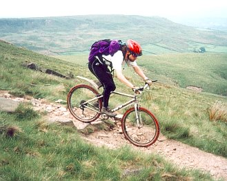

This provides information for visitors to Britain who would like to do some cycling while they are here. I try to cover both on and off-road cycling.
my well-worn Cambridge Landranger map Most people use maps made by the Ordnance Survey (OS). They have several categories of maps.
If you're a road biker, the most useful to you would be the Landranger (bright pink cover, 1:50,000 scale, 2cm to 1km or 1 1/4" to 1mi) for detail, and Road maps (green cover, 1:250,000 scale, 1cm to 6.25km or 1" to 10 miles) for route planning (helps to see the big picture). Also useful are the Touring maps, which have various scales, depending on the density of roads (1:500,000 for Scotland to 1:75,000 for London).
The Landranger maps also have all trails on them as well as contour lines, so you can use them for walking and mountain biking too. They have sufficient detail in the villages to enable you to find your way through them, and also to find pubs, windmills, and other interesting features. However, to find street names you'll need to buy specific city and town maps.
Road maps show much more area per map, and thus are good for long-distance route planning. They also mean that you need to carry far fewer maps for a given area. Nowadays I only use these maps for road touring, as I don't seem to need the extra detail of the Landranger maps. The Road maps show fewer contour lines and only the vague outlines of the longest paths, but they show most if not all of the roads in the area. There are private companies (like Philip's and A-Z) that make maps of about the same scale as the OS maps. They show even less off-road info than the Travelmaster maps, but this leads for a less cluttered map if you're only interested in the roads. Note: different maps show different types of accomodation. OS maps show both campgrounds and youth hostels, Philip's show only youth hostels, and A-Z maps don't show either.
I haven't actually used the Touring maps (they're quite new), but they look to be useful, having the right scale for the area they are covering.
Off-road paths are marked on the Landranger (pink cover, 1:50,000 scale) and Explorer (orange cover, 1:25,000 scale) and Outdoor Leisure (yellow cover, 1:25,000 scale).
Motorways: equivalent to American interstate highways. Bikes are forbidden from these. On maps they're identified by color (blue on Landranger maps) and name (like M11).
A-roads: these range from something that pretty much looks like a motorway to a simple road that has one lane in each direction and only a line down the middle dividing the two lanes. You want to avoid the first kind, but the smaller A-roads are OK. Usually the lanes are reasonably wide and the road surface is good. They're good for getting places if you want to get there fast, but since in general they have a fair amount of traffic they're not all that pleasant. These are also identified by color (red on Landranger maps) and name (like A14) on maps.
B-roads: typically a road with medium width lanes, one lane in each direction. Less traffic than an A-road, and not quite as well paved. Shown by color (orangy-brown on Landranger maps) and name on maps.
Unclassified roads: roads that aren't motorways, A-roads, or B-roads. They are shown in yellow on Landranger maps and are sometimes called yellow roads, also called C-roads. These don't get names on maps. You navigate using village names. Villages are scattered throughout the countryside here. You plan your route by noting which villages you will go through. At every intersection there are signs showing the direction and distance to the nearby villages. Another hint to help you find your way is that in towns and villages, roads that leave the town are often named after the town or village they lead to. So if you're in Barton and want to go to Comberton, you take Comberton Road. The same road changes name to become Barton Road as you get to Comberton.
For maximum riding pleasure, unclassified roads are the best for riding on, as they have the least traffic and the most scenery. They are also the most hilly. Some of them are marked as being very skinny on the map. These are called single track roads, so called because they aren't wide enough for two cars to pass. There are frequent "passing places", paved places where you can pull off the road to let someone coming in the opposite direction get by you. However, for long-distance riding, I prefer B-roads. Generally these are a bit better paved and navigation is easy because you can just get on the road and follow the signs to stay on it, rather than doing the navigate-by-villages thing.
An organization called Sustrans has been working on establishing a network of signed paths called the National Cycle Network. They generally use the smallest roads that go in the general desired direction, and often go off-road onto cycle paths when suitable roads aren't available. They offer great scenery, but are best suited for rides when you don't want to get anywhere fast. The routes tend to be circuitous and quite hilly, and a few of the off-road bits are very tough.
Cycle paths are (usually) paved paths that either run next to roads (on what we call the pavements, known in the US as sidewalks) or through parks, along rivers, and whatnot. Unless the pavement has a sign designating it a cycle path, you are not allowed to ride on it. (Nevertheless, many beginner cyclists do.) The cycle paths not next to roads can be of great value, allowing you to take a shorter, perhaps more scenic, route to get where you're going. However, cycle paths next to roads are usually of no benefit for experienced cyclists and are best avoided.
A slightly tricky question is: if a cycle path is provided next to a road, do you have to use it? The answer is that you are not legally obliged to use it. The Highway Code suggests that you should, but this is not a legally binding document, it's just a collection of suggestions for safe use of roads. I would suggest that as long as you know how to handle yourself on the road (e.g. getting into the proper position on the road as you approach junctions, signalling clearly, etc) that you ignore the cycle paths and use the roads. Riding on cycle paths is a hassle as you have to give way at every junction, and because of the increased danger at every junction, you're more likely to be hit by a car. If you ride on the road, motorists may honk their horns at you and point at the cycle path, but you should ignore them: you are riding safely and properly.
See my bike safety article for more info.
 off-road in the Pennines Off-road paths are marked on the Landranger (pink cover, 1:50,000 scale) and Explorer (orange cover, 1:25,000 scale) and Outdoor Leisure (yellow cover, 1:25,000 scale). The paths that the public are allowed to use are called rights-of-way. All of them are marked on the Landranger maps, but you'll get more detail on the Explorer or Outdoor Leisure maps. There are four types of rights-of-way: footpaths, bridleways, RUPPs (road used as public path) and BOATs (byway open to all traffic). The RUPPS are in the process of going away, being replaced by bridleways or byways.
Walkers can use all of these paths; horses and cyclists can use the bridleways, RUPPs, and byways; and motorized vehicles can only use the RUPPs and byways.
There are also some ambiguous markings. A black dotted line means a path that is not a right of way. Sometimes you're allowed on these paths, sometimes not. It's up to the landowner to decide (I think). There are also "white roads", which are not colored (hence white) on the map. Again, sometimes you are allowed, sometimes not. My approach to these paths and roads is to head towards them, and as long as I don't see any signs saying I shouldn't be there, I assume I'm allowed. (Officially I think you're supposed to get the permission of the landowner first.)
Most footpaths, bridleways, and byways are marked by signs along the roads. These are usually green metal (sometimes wooden) and on poles so they're about 2 meters above the ground. Sometimes the sign will tell you what villages the paths lead to and the distance to them (e.g. public footpath Hauxton 2 1/2), but sometimes they just identify the direction and type of path. Where paths intersect out in the country you'll sometimes see signs like the ones along the road, but you'll often see simple waymarks instead. These are metal circles with colored arrows nailed to posts along the trail. A yellow arrow indicates footpath, a blue arrow a bridleway, and a red arrow a byway.
The main "hazard" is roundabouts. To get these safely you need to know the traffic rules relating to them. I have an article on cycling in traffic; the roundabouts section is here. Actually, the entire article is worth reading if you're not familiar with effective cycling techniques.
The main other possible hazard I can think of is that the roads around here are fairly narrow. The main place in which this causes difficulties is in towns. The cars have less opportunity to pass you, and they can sometimes get impatient, and then pass you with too little room (in my opinion) to spare. But I have never felt in any real danger because of this.
In comparison to riding in the US, you're far less likely to be the victim of a violent attack here. It's very rare in the US, I know, and I felt reasonably safe during my two solo tours there. But it's almost unheard of over here. I feel perfectly safe riding by myself in the night on lonely country roads. Also you're far less likely to get things hurled at you, and slightly less likely to have insults hurled at you.
The main choices for travellers are camping, youth hostels, and B&Bs/hotels. Some people are hardy enough to do camping trips, but it's not very warm here even in the summer, and it can be fairly rainy, so this isn't the best way to travel. Youth hostels offer a nice, reasonably priced way to get around. A bunk in a hostel is inexpensive (usually around 10 pounds per night), and most hostels have washing and drying facilities as well as a locked shed for bikes. Usually they have a kitchen where you can cook your own food; some have a cafeteria where you can buy meals. Most of the hostels in Britain are part of the YHA (many in Ireland are independently owned). Sometimes hostels are completely filled on weekends with school groups, so it's a good idea to book ahead if you know where you're going to be.
B&B/hotels are another nice way to see the country. Many people do B&B (bed & breakfast) for some extra income, so if you're just cycling around, as long as the road isn't too small, there's a good chance you'll find a B&B when you're getting ready to retire for the night. However, in peak season in the most touristy areas, B&Bs in towns can fill up, especially during special events. B&B price is typically somewhere near 20 pounds a night, often more in larger towns and cities. Some of them serve an evening meal, especially if you ask in advance, but most only do breakfast, so you'll have to go to a restaurant or pub for dinner.
Hotels can also be useful for accomodation, but they aren't as frequent as B&Bs, so are better used when you're planning a trip in advance. Hotels tend to be more expensive than B&Bs. They usually include breakfast in the cost, and are more likely to do dinners than B&Bs.
If you're out for a long ride it's nice to take a break in the middle of the day for a rest and refuel stop. The usual places to stop for a sit-down meal are cafes, pubs, and tea rooms. Most villages have at least one, and they are generally very welcoming to cyclists, even in bright lycra. Lunch times are typically noon to 2pm.
If you don't want a sit-down meal, but just want to get some food to eat while sitting on a park bench or from the saddle, then most villages have shops/newsagents where you can buy biscuits (cookies), chocolate bars, or cereal bars. Most petrol station shops have sandwiches, if you're looking for something a bit more substantial. Some village shops stay open quite late, but some close early. The petrol station shops usually stay open very late.
It's rare to be able to rent (hire, in UK English) nice road bikes. There are lots of bike hire places, but they're mainly for visiting students and tourists who aren't serious bikers. They only rent out either cheap mountain bikes or cheap town bikes (with fenders, front baskets, generators, etc). If you want to ride a nice road bike it's probably best to bring your own. Or, if you desire a touring bike, buy one while you're here. There's much more choice here than in the US. If you're in a good MTBing area, there's a chance you'll be able to rent a fairly trail-worthy bike from a nearby bike shop.
The Cyclists' Touring Club (CTC) is Britain's largest bike organization. Originally it was mostly a bike touring club (hence the name) but now it is the most active organization involved in lobbying for cyclists' right, and it includes a growing off-road section as well.
If you're looking for lots of route information, it may be useful to join the CTC, as this info is free to members. See their Web pages. Also, there are CTC District Associations all over Britain, and sufficiently fit (check with the DA: this varies alot!) people are welcomed on the rides.